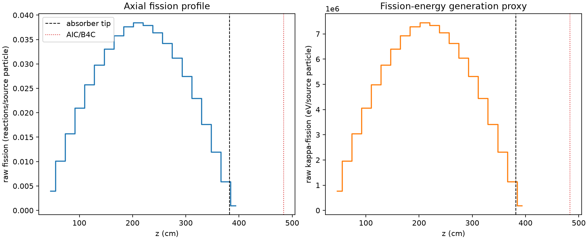
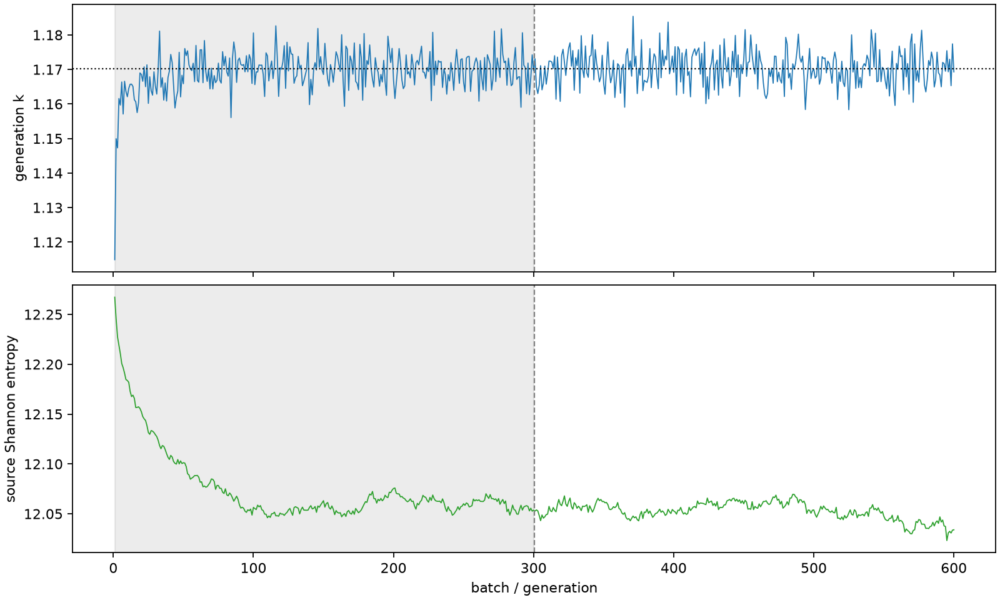

| field | value |
|---|---|
| experiment | V2-STAGE_32_OGRENCI_02-0003 |
| k | 1.1702449902425658 |
| MC standard error | 0.00018463243767035873 |
| seconds | 1261.9519481819993 |
| acceptance | not_assessed |
| convergence | review_required |
Completed is output integrity only; physical and statistical review required. Zero tallies do not prove zero production or zero uncertainty.
| diagnostic | value |
|---|---|
| geometric fuel voxels | 5280 |
| zero fission tally voxels | 0 |
| low signal fuel voxels | 0 |
| low signal fission share | 0.0 |
| low signal kappa share | 0.0 |
| important fission share | 0.9500897082591099 |
| previous filter included | 5280 |
| duration estimate s | 1562.5173488400023 |
| actual minus estimate s | -300.565400658003 |
| fission relative MC error | statistics |
|---|---|
| all_geometric_fuel | {"voxels": 5280, "positive_mean_voxels": 5280, "zero_mean_voxels": 0, "undefined_relative_error_voxels": 0, "median": 0.009482810497740364, "p95": 0.0309939524194533, "maximum": 0.055598466564136424} |
| low_signal | {"voxels": 0, "positive_mean_voxels": 0, "zero_mean_voxels": 0, "undefined_relative_error_voxels": 0, "median": null, "p95": null, "maximum": null} |
| important_95pct | {"voxels": 4158, "positive_mean_voxels": 4158, "zero_mean_voxels": 0, "undefined_relative_error_voxels": 0, "median": 0.008824350328381345, "p95": 0.013254081768730507, "maximum": 0.016214239175645916} |
| outside_previous_filter | {"voxels": 0, "positive_mean_voxels": 0, "zero_mean_voxels": 0, "undefined_relative_error_voxels": 0, "median": null, "p95": null, "maximum": null} |
| kappa_fission relative MC error | statistics |
|---|---|
| all_geometric_fuel | {"voxels": 5280, "positive_mean_voxels": 5280, "zero_mean_voxels": 0, "undefined_relative_error_voxels": 0, "median": 0.009473153928284388, "p95": 0.03095518675219826, "maximum": 0.05551139709765046} |
| low_signal | {"voxels": 0, "positive_mean_voxels": 0, "zero_mean_voxels": 0, "undefined_relative_error_voxels": 0, "median": null, "p95": null, "maximum": null} |
| important_95pct | {"voxels": 4158, "positive_mean_voxels": 4158, "zero_mean_voxels": 0, "undefined_relative_error_voxels": 0, "median": 0.008814150233251897, "p95": 0.013237597681613825, "maximum": 0.016196107307271283} |
| outside_previous_filter | {"voxels": 0, "positive_mean_voxels": 0, "zero_mean_voxels": 0, "undefined_relative_error_voxels": 0, "median": null, "p95": null, "maximum": null} |
| axial bin | fission share | kappa-fission share |
|---|---|---|
| 1 | 0.00833240990192231 | 0.008332838829804824 |
| 2 | 0.021194806435558263 | 0.021194801310336988 |
| 3 | 0.0328718965749768 | 0.032871797251440495 |
| 4 | 0.043831761700638926 | 0.043831748804357334 |
| 5 | 0.05382949236903387 | 0.05382951352943477 |
| 6 | 0.062303103652021144 | 0.062302942832249575 |
| 7 | 0.06920394957394586 | 0.0692038807794581 |
| 8 | 0.0749629848637186 | 0.07496284819296256 |
| 9 | 0.07878059247415417 | 0.07878053945857172 |
| 10 | 0.08041562381480281 | 0.08041564315590216 |
| 11 | 0.07929764807837611 | 0.07929736949846515 |
| 12 | 0.07620837685238324 | 0.07620822813247159 |
| 13 | 0.07156720048686896 | 0.07156691596157734 |
| 14 | 0.06530599218783519 | 0.0653058134598289 |
| 15 | 0.05750849293283117 | 0.05750833732864278 |
| 16 | 0.04799562978624045 | 0.047995599193722385 |
| 17 | 0.0369587829133344 | 0.03695870006114049 |
| 18 | 0.025086930177472048 | 0.02508691135772223 |
| 19 | 0.012306672291545032 | 0.012306975619922245 |
| 20 | 0.0020376529323404757 | 0.0020385952419881633 |
Histories include the inactive-to-active transition at batch 300. kappa-fission approximates fission energy production, not total heat deposition.

